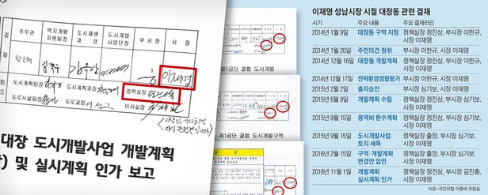

오징어 게임
대한민국의 넷플릭스 오리지널 드라마이다. 456명의 사람들이 456억의 상금이 걸린 미스터리한 데스 게임에 초대되면서 벌어지는 이야기를 그린 데스 게임 장르의 드라마
대한민국의 넷플릭스 오리지널 드라마이다. 456명의 사람들이 456억의 상금이 걸린 미스터리한 데스 게임에 초대되면서 벌어지는 이야기를 그린 데스 게임 장르의 드라마
불어민주당 이재명 대선 후보가 대장동 개발의 입안부터 배당금 활용까지 사업 전반을 보고받고 승인한 것으로 15일 나타났다. 대장동 개발 사업이 진행되던 2014년부터 2016년 말까지 이 후보가 크고 작은 안건들을 결재한 공문서들이 공개된 것이다.
